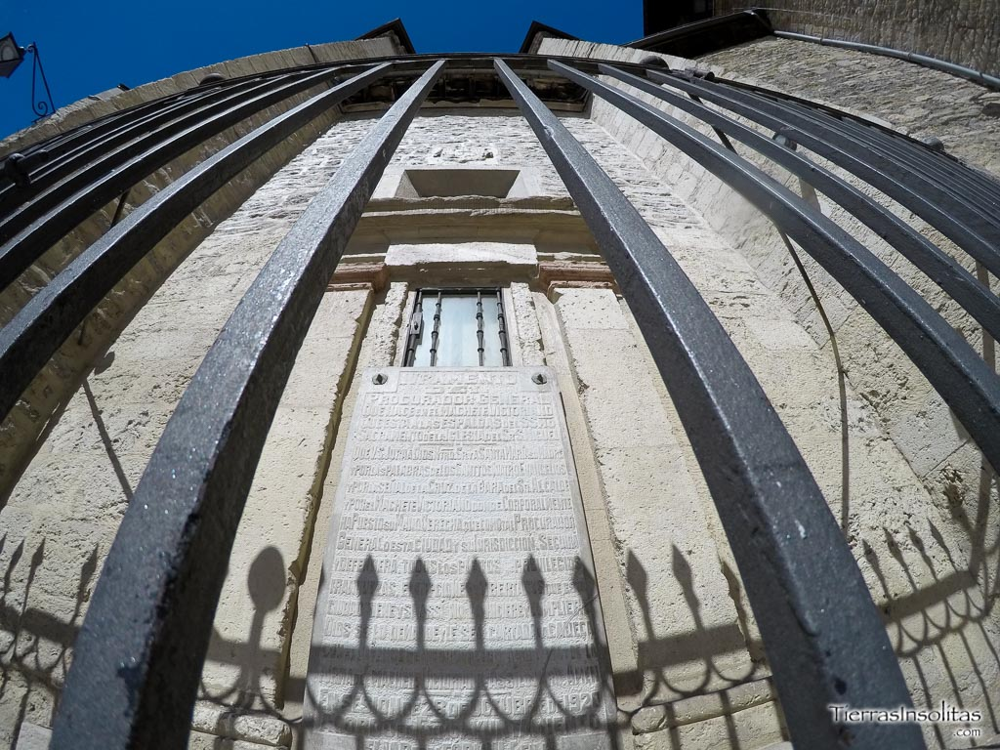
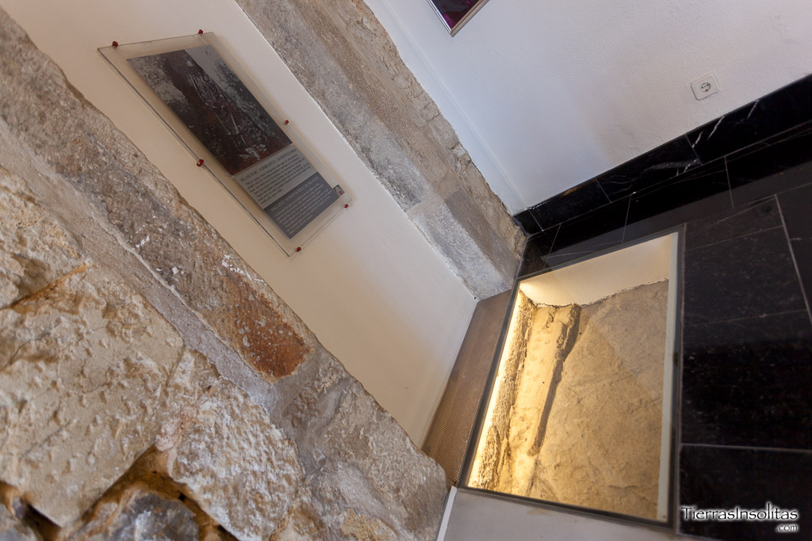
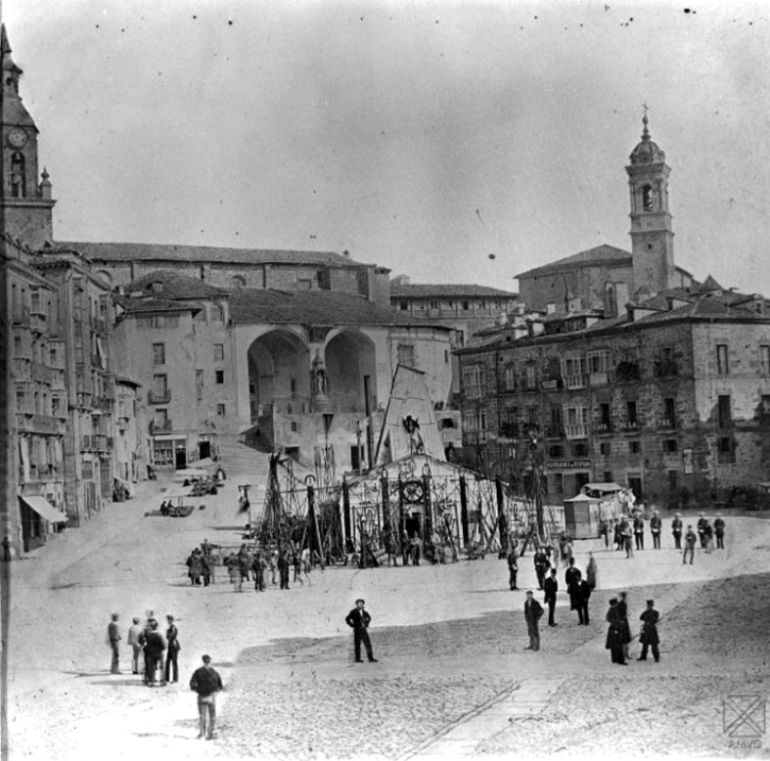
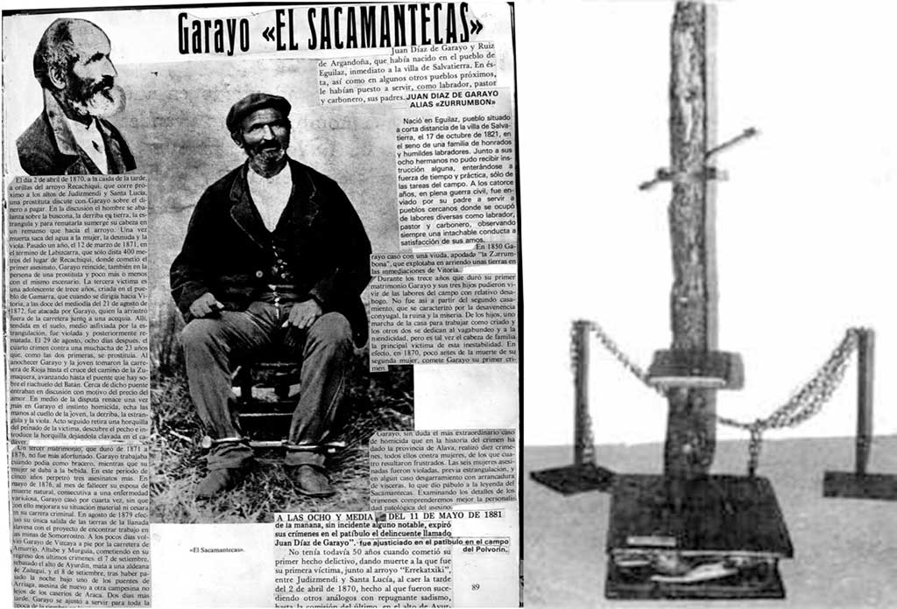

Curiosidades de Vitoria-Gasteiz
1. Plaza del Machete
Precioso rincón de Vitoria-Gasteiz encajonado por la Iglesia de San Miguel y el Palacio de Villa Suso. Lo curioso de ésta plaza es su nombre, plaza del Machete. Y es que si miramos en el ábside de la Iglesia de San Miguel, podremos ver una urna que guarda, nada más ni nada menos que un “machete”.
Y es que en época Medieval el Procurador General, en presencia del todo el pueblo, renovaba en ésta plaza el juramento que habían efectuado los miembros del Ayuntamiento. Éste juramento era prestado sobre un machete con el que se amenazaba en cortarle la cabeza si no se cumplía. He aquí el juramento: “Juramento del procurador general que hace en el machete vitoriano, que está a las espaldas del santísimo sacramento de la Iglesia del Sr S. Miguel: Que Us. Jura a Dios Ntro. Sr. y a Santa María su madre, y por las palabras de los santos cuatro evangelios, y por la señal de la cruz de la bara del Sr. alcalde, y por el machete vitoriano donde corporalmente ha puesto su mano derecha, que como tal procurador general de esta ciudad y su jurisdicción, seguirá y defenderá todos los pleitos, privilegios, franquezas, excepciones y libertades que esta ciudad tiene, y si asi no lo hiciere y cumpliere, dios se lo demande y le sea cortada la cabeza con el alfanje de hierro y acero agudo tal y de la forma del machete vitoriano: Asi lo juro amen”
2. La emparedada de Villa Suso
Durante las obras de rehabilitación de 1982, fue descubierta una tumba de la Edad Media cubierta por piedra caliza con un enterramiento de una adolescente. Al deberse a un hallazgo sin ningún otro resto y fuera de contexto, nace la leyenda de “la emparedada”. Quizás pudiera ser la hija del dueño del palacio que nació con alguna tara o una criada amante del señor que comenzó a dar problemas… Éstas son sólo algunas leyendas que rodean éste hallazgo, sin saber cuáles son ciertas y cuáles no.
3. El fantasma de Andresito
En la delegación estatal de Hacienda situada en la calle Olaguibel, se levanta un misterio sin resolver. Andresito, fantasma así bautizado por los temerosos guardas de seguridad, vaga por los pasillos del edificio durante las oscuras noches. Psicofonías de niños jugando y cantando, grabaciones de extrañas figuras con túnicas, risas que rompen el silencio de la noche, objetos que cambian de lugar, manchas y figuras que aparecen diversos lugares… casos reales o leyendas que rodean éste lugar. Fue tanto el miedo que suscitó éstos sucesos que se optó por suprimir la vigilancia humana y sustituirla por video vigilancia. Una de las curiosidades de Vitoria-Gasteiz que pone los pelos de punta!!!
Aquí se alzaba el antiguo convento de San Francisco, fundado en 1200. Debido a circunstancias de orden urbanístico fue demolido en los años 30 y no fue hasta los años 60 cuando finalmente se levantó la actual delegación estatal de Hacienda. El único vestigio que se conserva del convento es un antiguo arco de piedra situado en el patio trasero de la delegación.
4. El símbolo de Vitoria-Gasteiz
Así es, Vitoria-Gasteiz tiene símbolo propio. Es posible que aunque esté plasmado en cantidad de sitios se os haya pasado por alto. Localizado en gran cantidad de farolas de la ciudad, éste símbolo aparece en el lugar de las firmas del documento de fundación de la villa de Vitoria en 1181. Consiste en una cruz patada.
5. El pozo de la Virgen Blanca
Los ríos Abendaño, Zapardiel y Batán ya no suministraban suficiente agua. Es por ello que el consistorio encargó realizar un pozo artesiano. Un estudio de un famoso ingeniero francés, M. Alphonse F. Richard, sitúa el mejor lugar para obtener agua del acuífero vitoriano en la Plaza de la Virgen Blanca, también conocida en esa época como Plaza Vieja o Plaza del Mercado. Los trabajos comenzaron en 1877 y durante cinco años los vitorianos estuvieron escuchando ininterrumpidamente el ruido de la construcción del pozo.
En 1882 se tuvo que suspender los trabajos, habiendo alcanzado el pozo una profundidad de 1.021 metros si haber encontrado ni una gota de agua. Eso sí, la perforación batió récord mundial, siendo en éste punto la temperatura de la tierra de 40ºC. Con los estudios actuales se sabe que hubiese hecho falta llegar a una profundidad total de 2.800 metros para haber alcanzado el agua. Finalmente se optó por tapar el pozo artesiano y traer agua del Gorbea al depósito del Campillo, inaugurado en 1884. Una placa de mármol en la Plaza de la Virgen Blanca recordaba éste “fracaso”, pero con la remodelación de la misma en 2008 ésta placa fue retirada y guardada en el Museo de Ciencias Naturales para su conservación.
6. El Sacamantecas
Vitoria-Gasteiz también esconde un oscuro pasado, el cual protagonizó Juan Díaz de Garayo Ruiz de Argandoña, más conocido como “El Sacamantecas”. Entre 1870 y 1879 asesinó y violó a seis mujeres de edades comprendidas entre los 13 y 55 años, cuatro de ellas prostitutas, para luego abrirles el estómago. Es así como se convirtió en el segundo asesino en serie de España y bautizado por El Sacamantecas.
En 1880 fue apresado y condenado a muerte por los asesinatos y varios intentos que no llegaron a consumarse. Murió en el “Garrote Vil” en 1881 en la prisión del Polvorín Viejo. Muchos recordarán como nuestras madres nos asustaban por las noches para que nos durmiésemos: “duerme que si no vendrá el Sacamantecas u hombre del saco…”.